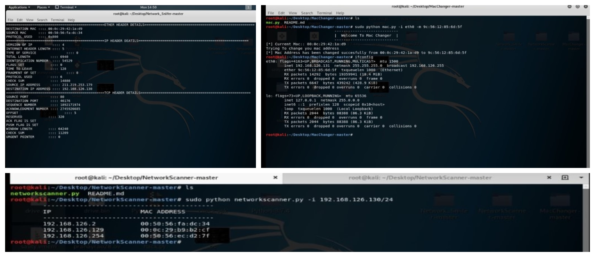

Automated Reconnaissance Tool - Description
This Project is developed to utilize these components in security to perform Information Gathering Phase. Developed three scripts using python which has Network Packet Sniffer, Network Scanner and Mac Address Changer. Integrated three components to build a automated tool majorly used for reconnaissance.